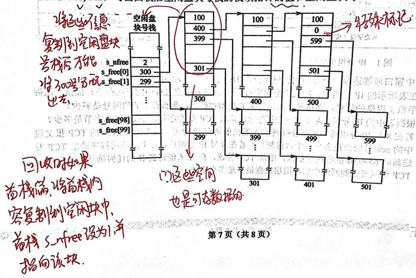

2024年度总结
年度总结
2025年了，希望是新的开始。因为准备考研，总结工作推迟到了现在。毕业，二战，都是难忘的人生经历，但人生永远要向前看，好好准备复试，就是现在最重要的事。
毕业了，很高兴能在软件学院度过大学生活，能学习自己喜欢的专业无疑是我的幸运，因此这一路的辛苦都不值一提。在山大有许多让我印象深刻的老师，学到了很多有用的知识和技能，毕业论文没有多提，这里也不多赘述，心中记着，无需多言。但要特别感谢一下高数下的授课老师来翔老师 ，关注班里每一个学生，让我在大学教室里看到了高中老师一样的认真负责，对于当时缺乏自信的我来说提供了很大的鼓励。有这样认真负责的老师，可以说山大数学名副其实。
回顾本科所学的课程，大概可以分为三个阶段。一是基础知识，如数学基础和编程语言基础，二是计算机学科的知识框架，如数据结构，数据库，计算机组成，操作系统，计算机网络等，三是更深层次的应用，如机器学习，深度学习，并行计算，nlp等等，此外还有一些工程能力方面的训练。
两年考研，我收获了很多。最大的长进就是心态方面的进步，25年的考研题目没有一科可以说是真的简单的，都考了一些令人意外的东西，但我在考场上并不慌张，能够及时调整好状态。一战的失败原因很大一部分就在于考场上太慌了，我从过去学到了教训，人是螺旋上升的，当我回到原点的时候，高度已经发生了变化，我已经不再是原来的我了。往后的道路也一样，永远都会面对未知，允许一切发生，重要的是面对未知时沉着冷静，积极地解决问题。
附录
附上今年备考期间的部分408笔记，以后应该用不上了。数学笔记都是纸质的，政治时效性太强，就不放了。
数据结构大纲及部分笔记
[考查目标]
1.掌握数据结构的基本概念、基本原理和基本方法.
2.掌握数据的逻辑结构、存储结构及基本操作的实现，能够对算法进行基本的时间复杂度与空间复杂度的分析.
3.能够运用数据结构基本原理和方法进行问题的分析与求解,具备采用C或C++语言设计与实现算法的能力.
新增：数据结构的基本概念，算法的基本概念
一、线性表
（一）线性表的基本概念
（二）线性表的实现
1.顺序存储
2.链式存储
静态链表（用数组表示，类似FAT，但FAT可以动态更新）在定义时规定了最大长度，且需要预先分配一块连续的存储空间
（三）线性表的应用
二、栈、队列和数组
（一）栈和队列的基本概念
（二）栈和队列的顺序存储结构
（三）栈和队列的链式存储结构
队列的链式存储通常是从队头指向队尾
（四）多维数组的存储
（五）特殊矩阵的压缩存储
（六）栈、队列和数组的应用
三、树与二叉树
（一）树的基本概念
（二）二叉树
1.二叉树的定义及其主要特征
完全二叉树的高度：
由2^(h-1)-1<n<=2^h-1（高度为h的二叉树最多2^h-1个节点，也可以写为2^(h-1)<=n<2^h）
得h-1<log(n+1)<=h
即h=log(n+1)上取整 （或h=logn下取整+1）
2.二叉树的顺序存储结构和链式存储结构
3.二叉树的遍历
4.线索二叉树的基本概念和构造
先序线索二叉树不能找到前驱，后续线索二叉树不能找到后继，中序都可以找到
原因：中序线索二叉树中没有浪费指针
（三）树、森林
1.树的存储结构
2.森林与二叉树的转换
3.树和森林的遍历
（四）树与二叉树的应用
1.哈夫曼（Huffman）树和哈夫曼编码
2.并查集及其应用
3.堆及其应用
其他特殊的树总结：
败者树
四、图
（一）图的基本概念
（二）图的存储及基本操作
1.邻接矩阵
2.邻接表
3.邻接多重表、十字链表
（三）图的遍历
1.深度优先搜索
2.广度优先搜索
（四）图的基本应用
1.最小（代价）生成树
Kruskal算法选边，每次用并查集判断边对应的两个顶点是否属于同一个连通分量
Prim算法选点只需要用数组记录点到当前最小生成树的距离即可
2.最短路径
Dijkstra算法：求单源最短路径，带负权值不适用
Floyd算法：求各顶点间最短路径，带负权回路不适用
3.拓扑排序
4.关键路径.
五、查找
（一）查找的基本概念
（二）顺序查找法
（三）分块查找法
（四）折半查找法
（五）树型查找
1.二叉树搜索树
2.平衡二叉树
3.红黑树
插入：
新节点初始为红，如果父节点为黑，不需处理，结束；
如果新节点是根结点，涂黑，结束；
否则看叔叔节点的脸色：
黑叔：旋转+染色
红叔：先换色（爷节点和父辈节点换色），然后爷节点作为新节点向上递归处理
删除：注意，删除的是内部节点
待删节点有两个孩子，用中序后继或前驱代替，转换为删除其后继或前驱；
待删节点只有一个孩子，则必然是父黑子红，删除后孩子代替并染黑即可；
待删节点无孩子且为红，直接删除；
待删节点无孩子且为黑，删除后用一个外部节点x代替，x视为双重黑色，代替后x的兄弟记为w（也是原待删节点的兄弟），以x为父节点的左孩子为例，则w的右孩子远左孩子近：
若w为红，通过旋转和染色转换为w为黑；
若w黑，且远孩子为红（近孩子可红可黑），将w与父节点换色，w远孩子染黑，再旋转，x黑色减去一重，结束；
若w黑，远孩子黑近孩子红，w与红孩子换色再旋转，转换为上一种情况；
若w黑且左右孩子黑，从x和w各去掉一重黑色，父节点加上一重黑色作为新的x向上递归；（若父节点原来为红，加一重变为单黑则结束）
若x为父节点的右孩子，与上面处理对称。
（六）B树及其基本操作、B+树的基本概念
（七）散列（Hash）表
（八）字符串模式匹配
假定模式串编号从1开始，失配时主串i不变，模式串j变为nextj，即nextj表示子串位置j失配时跳到子串nextj位置与主串当前位置比较（这里先忽略主串当前位置一定不为子串的j位置字符，主串当前位置视为未知（？））
nextval：如果子串nextj位置与j位置字符相等，修正nextj=next[nextj]
如果从0开始编号，上述next数组和nextval数组各元素自减即可
（九）查找算法的分析及应用
六、排序
（一）排序的基本概念
（二）直接插人排序
（三）折半插人排序
（四）起泡排序（bubble sort）
（五）简单选择排序
（六）希尔排序（shell sort）
（七）快速排序
（八）堆排序
若要得到从小到大的排序，先初始化大根堆，再每次输出堆顶元素到尾部
（九）二路归并排序（merge sort）
（十）基数排序
（十一）外部排序
败者树：不论是内部的失败节点还是顶部的冠军节点记录的都是段号
选择置换排序：每次从工作区中选出比minimax大的元素中最小的作为新的minimax插入初始归并段
k路平衡归并：每次合并减少k-1个节点，n个节点通过（n-1）/（m-1）次合并为1个
最佳归并树：经过添加虚段后变为严格k叉树（仅有度为0和度为k的结点）
（十二）排序算法的分析和应用
元素个数n较小时，选择直接插入或简单选择，且直接插入移动次数移动次数更多；
稳定：鸡插炮龟，鸡你太稳
复杂度与初始状态无关：选基归堆
比较次数与初始状态无关：选基，折半插入
移动次数与初始状态无关：归基
[考查目标]
1.理解单处理器计算机系统中主要部件的工作原理、组成结构以及相互连接方式.
2.掌握指令集体系结构的基本知识和基本实现方法，对计算机硬件相关问题进行分析,并能够对相关部件进行设计.
3.理解计算机系统的整机概念，能够综合运用计算机组成的基本原理和基本方法,对高级编程语言（C 语言）程序中的相关问题进行分析，具备软硬件协同分析和设计能力。
计组大纲及部分笔记
# 一、计算机系统概述
## （一）计算机系统层次结构
1.计算机系统的基本组成
计算机系统：硬件：主机（CPU（运算器+控制器）+主存）+外设；软件
冯诺依曼机：
\1. 控制流驱动：先指令->数据
\2. 存储程序：事先编制好程序，自动逐条执行
\3. 指令和数据同等地位存储
\4. 二进制代码
\5. 运算器+控制器+存储器+输入+输出
2.计算机硬件的基本组成
运算器：算术逻辑单元ALU，通用寄存器（ACC,乘商MQ,X,变址IX,基址BX），PSW
控制器：PC,IR,控制单元CU
MAR：对应最多可寻址的存储单元个数，长度与PC长度相等，数据从MAR单向到主存
MDR：位数与存储字长相等
存储体由存储单元构成，存储单元对应存储字，存储元件对应一位二进制0或1
!!! IR,MAR,MDR对各类程序员都透明
3.计算机软件和硬件的关系
4.计算机系统的工作原理
“存储程序”工作方式，高级语言程序与机器语言程序之间的转换，程序和指令的执行过程
源程序经过编译，汇编，链接
## （二）计算机性能指标
吞吐量、响应时间； CPU时钟周期、主频、CPI、 CPU执行时间； MIPS、 MFLOPS、GFLOPS、TFLOPS、 PFLOPS、 EFLOPS、 ZFLOPS
CPU时钟周期：主频的倒数
CPI：一条指令平均所需时钟周期数
单位：K,M,G,T,P,E,Z
# 二、数据的表示和运算
（一）数制与编码
1.进位计数制及其数据之间的相互转换
2.定点数的编码表示
（二）运算方法和运算电路
1.基本运算部件
加法器，算术逻辑部件（ALU）
算数移位：符号位参与移位，右移时高位补符号位，左移时若前后符号位不同则溢出
2.加/减运算
补码加/或运算器，标志位的生成。
溢出判断：
有符号数：输入端符号相同且不同于输出端
无符号数：最高位产生进位1（加法）或0（减法）
3.乘/除运算
乘/除法运算的基本原理
n+1位乘法：最多n次加法n次移位1次符号位异或
乘法电路和除法电路的基本结构.
溢出判断（补码）：
有符号数：高n+1位不全为0（正数）或不全为1（负数）
无符号数：高n位非全0或非全1
（三）整数的表示和运算
1.无符号整数的表示和运算
2.带符号整数的表示和运算
（四）浮点数的表示和运算
1.浮点数的表示
IEEE 754标准
1+8+23=32 偏置值2^(8-1)-1=127
1+11+56 偏置值2^(11-1)-1=1023
尾数1.xxxx最高位1隐含
2.浮点数的加/减运算
# 三、存储器层次结构
## （一）存储器的分类
关联存储器（相联存储器），是一种不根据地址而是根据存储内容来进行存取的存储器，可以实现快速地查找快表。既可以按照地址寻址也可以按照内容寻址（通常是某些字段），为了与传统寄存器作区别，称为按内容寻址的存储器。
## （二）层次化存储器的基本结构
主存与cache（由sram构成）之间：硬件自动完成，缺失也由硬件处理
主存cache系统的效率=cache命中时间/平均访问时间
主存与辅存：硬件+操作系统
（三）半导体随机存取存储器
注意CD-ROM并不是半导体存储器rom
1.SRAM存储器
2.DRAM存储器
刷新时所有芯片内部同时进行
3.Flash存储器——属于ROM
（四）主存储器
1.DRAM芯片和内存条
2.多模块存储器
RAID0条带化提高速度；
RAID1镜像存储提高可靠性；
RAID2海明码；
RAID3奇偶校验；
3.主存和CPU之间的连接
（五）外部存储器
1.磁盘存储器
2.固态硬盘（SSD）
（六）高速缓冲存储器（Cache）
1.Cache的基本原理
2.Cach和主存之间的映射方式
3.Cache中主存块的替换算法
4.Cache写策略
写不命中时，写分配法：更新主存块再调入cache；非写分配法：只更新主存不调入cache
（七）虚拟存储器
1.虚拟存储器的基本概念
2.页式虚拟存储器
基本原理，页表，地址转换，TLB （块表）
3.段式虚拟存储器
4.段页式虚拟存储器
# 四、指令系统
（一）指令系统的基本概念
ISA规定的内容包括数据类型及格式，指令格式，寻址方式和可访问地址空间的大小，程序可访问的寄存器个数、位数和编号，控制寄存器的定义，I/O空间的编制方式，中断结构，机器工作状态的定义和切换，输入输出结构和数据传送方式，存储保护方式等。
（二）指令格式
（三）寻址方式
（四）数据的对齐和大/小端存放方式
（五）CISC和RISC的基本概念
RISC大部分指令在一个时钟周期内完成，寻址方式种类少，必须实现流水线，CISC也可以实现流水线
（六）高级语言程序与机器级代码之间的对应
1.编译器，汇编器和链路器的基本概念
2.选择结构语句的机器级表示
3.循环结构语句的机器级表示
4.过程（函数）调用对应的机器级表示
# 五、中央处理器（CPU）
可见：可编程
（？）汇编语言程序员可见的有PC、PSW、中断字寄存器、通用寄存器
不可见的有IR、MAR、MDR等等
应用程序员可见的有
不可见的有
（一）CPU的功能和基本结构
（二）指令执行过程
中断周期=中断响应周期，中断服务程序不在此周期
（三）数据通路的功能和基本结构
CPU=数据通路（操作（组合）元件+状态（时序）元件）+控制部件（不是控制器）
（四）控制器的功能和工作原理
微程序的直接控制法：一位控制一个信号
（五）异常和中断机制
1.异常和中断的基本概念
2.异常和中断的分类
3.异常和中断的检测与响应
（六）指令流水线
RISC必须实现流水线，CISC也可以实现流水线
1.指令流水线的基本概念
2.指令流水线的基本实现
3.结构冒险、数据冒险和控制冒险的处理
转发可以解决除了load-use外其他的数据冒险，故其他数据冒险可以无脑不阻塞，原理：寄存器取数流水段不是必须取到的，可以直接送到ALU输入端（EX段入口）
load-use可通过转发+一个流水段解决：lw指令段MEM段取出数后送到下一条指令的ALU输入端
4.超标量和动态流水线的基本概念
超标量：动态多发射，一个时钟周期多条指令，大多配合动态流水线调度乱序执行
超流水线：提高流水线主频，使得时钟周期变短流水线级数变大
超长指令字：静态多发射，将多条指令组合
（七）多处理器基本概念
1.SISD、 SIMD、 MIMD、向量处理器的基本概念
2.硬件多线程的基本概念
3.多核处理器（multi-core） 的基本概念
4.共享内存多处理器（SMP）的基本概念
简称多处理器系统，所有主存属于单一地址空间
# 六、总线和输入/输出系统
（一）总线
1.总线的基本概念
2.总线的组成及性能指标
3.总线事务和定时
（二）I/O接口（I/O控制器）
1.I/O接口的功能和基本结构
地址线传送IO接口中寄存器的地址，控制线传送读写信号、握手、仲裁，其余数据、控制、状态由数据线传送；cpu与IO端口间不会传主存地址（2015.21）
2.I/O端口及其编址
（三）I/O方式
1.程序查询方式：分为定时查询和独占查询
2.程序中断方式
中断向量：中断服务程序的入口地址
打印机：
键盘：
（进程p执行系统调用接收输入）
需要接收的进程p阻塞，cpu调度其它进程运行；
用户输入后，键盘控制电路将数据送到缓冲寄存器，发出中断请求；
cpu响应中断，中断服务程序将扫描码转换为ASCII码，送入主存中的键盘数据缓冲区；
（设备驱动程序将字符从键盘控制器读入系统缓冲区）
进程p插入就绪队列；
（进程p从系统调用返回）
注意二者区别，打印是先有数据，所以先送入系统缓冲区再中断，键盘需要等待数据输入，因此输入后再由中断服务程序调用设备驱动程序将数据送入系统缓冲区
中断的基本概念；中断响应过程；
中断处理过程；
中断服务程序的最后一条指令是中断返回指令，它比无条件跳转指令多了一些恢复的操作
多重中断和中断屏蔽的概念.
响应优先级：先响应哪个
处理优先级：是否会被打断
先转向响应优先级高的，之后屏蔽处理优先级比当前低的（被屏蔽的中断请求感知不到），其它中断（剩下的处理优先级都比当前高）依然先响应响应优先级高的，以此类推
3.DMA方式
DMA控制器的组成，DMA传送过程
dma用虚拟地址，则dma接口中应有地址映射表；若用物理地址，由os把一次传送分解为多次小数据量传送以保证每次只限定在一个物理页面进行
过时数据问题或IO一致性问题：cache和主存数据不一致
方案一：让IO活动通过cache进行，代价大，影响cache命中率
方案二：让os在io读时有选择地使某些cache块无效，在io写时迫使cache进行一次写回，需要少量硬件支持
方案三：通过硬件机制选择被刷新或使无效的cache，多用于多处理机系统
操作系统大纲及部分笔记
[考查目标]
1.掌握操作系统的基本概念、方法和原理，了解操作系统的结构、功能和服务，理解操作系统所采用的策略、算法和机制。
2.能够从计算机系统的角度理解并描述应用程序、操作系统内核和计算机硬件协作完成任务的过程.
3.能够运用操作系统原理，分析并解决计算机系统中与操作系统相关的问题。
一、操作系统概述
（一）操作系统的基本概念
（二）操作系统的发展历程
单道批处理系统：程序顺序执行，执行过程是确定的（可再现）
多道批处理系统：多道程序并发执行，执行过程存在不确定性（不可再现）
（三）程序运行环境
1.CPU运行模式
内核模式、用户模式
注意区分用户进程和用户模式，如果用户进程处于内核态，也有可能可以执行特权指令
2.中断和异常的处理
3.系统调用
与指令集体系结构和硬件对应，与操作系统独立
4.程序的链接与装入
5.程序运行时内存映像与地址空间
（四）操作系统结构
分层，模块化。宏内核，微内核，外核
（五）操作系统引导
os引导过程可能需要创建的数据结构：中断向量表，页表，进程控制块，内核栈
（六）虚拟机
二、进程管理
（一）进程与线程
1.进程与线程的基本概念
2.进程/线程的状态与转换
3.线程的实现
内核支持的线程，线程库支持的线程
4.进程与线程的组织与控制
5.进程问通信
共享内存，消息传递，
管道：只存在内存中，没有磁盘实体，读端和写端对应不同文件描述符
匿名管道只能用于有血缘关系的进程通信，相对的有命名管道
新增：信号
（二）CPU调度与上下文切换
1.调度的基本概念
2.调度的目标
3.调度的实现
调度器/调度程序（scheduler） ,调度的时机与调度方式（抢占式/非抢占式），闲逛进程，内核级线程与用户级线程调度
4.CPU调度算法
响应比：（等待+执行）/执行=1+等待/执行
带权周转时间：周转/**运行**
多级反馈队列调度：时间片用完则进入下一队列末尾（降低优先级）；注意有进程执行时有更高优先级进程进入，当前进程立即放在此队列的末尾
5.多处理机调度
6.上下文及其切换机制
（三）同步与互斥
1.同步与互斥的基本概念
2.基本的实现方法
软件方法；硬件方法。
3.锁
4.信号量
让权等待：不能进临界区则放弃cpu，不忙等
5.条件变量
6.经典同步问题
生产者-消费者问题；读者-写者问题；哲学家进餐问题。
（四）死锁
1.死锁的基本概念
2.死锁预防
3.死锁避免
4.死锁检测和解除
三、内存管理
（一）内存管理基础
1.内存管理的基本概念
逻辑地址空间与物理地址空间，地址变换，内存共享，内存保护，内存分配与回收
2.连续分配管理方式
3.页式管理
4.段式管理
5.段页式管理
（二）虚拟内存管理
1.虚拟内存基本概念
2.请求页式管理
3.页框分配与回收
4.页置换算法
clock算法又名第二次机会算法
5.内存映射文件（Memory-Mapped Files）
6.虚拟存储器性能的影响因素及改进方式
四、文件管理
（一）文件
1.文件的基本概念
逻辑记录是对文件进行存取操作的基本单位
2.文件元数据和索引节点（inode）
3.文件的操作
建立，删除，打开，关闭，读，写
文件描述符在形式上是一个非负整数，指向内核为每一个进程所维护的该进程打开文件的记录表。进程级打开文件表也叫文件描述符表。
读写指针也是进程打开文件表中的内容
4.文件的保护
5.文件的逻辑结构
6.文件的物理结构
（二）目录
1.目录的基本概念
windows：FCB就是目录项，FCB的集合就是目录
unix：文件名和索引节点编号
2.树形日录
3.目录的操作
4.硬链接和软链接
软链接类似于桌面快捷方式，可以视作特殊的独立文件（因此其引用计数值初始为1），存储的是目标文件的绝对路径。
硬链接和源文件指向同一个inode**。**
（三）文件系统
1.文件系统的全局结构（layout）
文件系统在外存中的结构，文件系统在内存中的结构
2.外存空闲空间管理办法
成组链接法
第一组空闲盘块总数和空闲盘块号保存在内存的专用站中称为空闲盘块号站

3.虚拟文件系统
4.文件系统挂载（mounting）
五、输入输出（I/O）管理
（一）I/O管理基础
1.设备
设备的基本概念，设备的分类，I/O接口, I/O端口
CPU向控制端口发送，从状态端口读取，数据端口双向，可读可写
2.I/O控制方式
轮询方式，中断方式，DMA方式
3.I/O软件层次结构
内核空间IO软件：
1中断处理程序
2驱动程序
3设备独立软件
负责分配，映射，缓冲，保护，分块
用户层I/O软件
4.输人/输出应用程序接口
字符设备接口，块设备接口,网络设备接口,阻塞/非阻塞I/O
（二）设备独立软件：设备独立性是指用户程序独立于具体使用的物理设备，注意以下属于设备无关的软件
1.缓冲区管理
通过陷入指令陷入内核态后，底层IO软件控制IO设备进行IO操作时使用内核中的缓冲区，以免由于用户进程被挂起使得用户缓冲区所在页面被替换出去导致无法获得缓冲区的数据
2.设备分配与回收
设备分配：先在系统设备表查找设备，然后在相应设备控制表查找控制器，然后在控制器控制表查找通道，即：设备、控制器、通道
3.假脱机技术（SPOOLing）
4.设备驱动程序接口：统一接口
此外还有：错误报告，打开与关闭文件，逻辑块大小处理
（三）外存管理
1.磁盘
rpm每分钟多少转
磁盘平均传输速率为每个磁道的数据除以旋转一圈的时间
磁盘是高速设备，通常采用DMA方式
磁盘结构，格式化，分区，
物理格式化-〉分区-〉逻辑格式化
物理格式化：划分扇区及相关数据结构，初始化逻辑块号到扇区的映射
逻辑格式化：形成文件系统及相关数据结构：空闲及已分配空间、目录、空闲磁盘块信息
磁盘调度方法
除了先来先服务以外的其他调度方法都会产生磁头臂黏着现象
2.固态硬盘
读写性能特性，磨损均衡
计网大纲及部分笔记
[考查目标]
1.掌握计算机网络的基本概念、基本原理和基本方法.
2.掌握典型计算机网络的结构、协议、应用以及典型网络设备的工作原理
3.能够运用计算机网络的基本概念、基本原理和基本方法进行网络系统的分析、设计和应用.
# 一、计算机网络概述
（一）计算机网络基本概念
Internet互联网与internet互连网不是同一概念
1.计算机网络的定义、组成与功能
2.计算机网络的分类
3.计算机网络主要性能指标
（二）计算机网络体系结构
1.计算机网络分层结构
2.计算机网络协议、接口、服务等概念
语法：数据和控制信息的格式
3.IS0/OSI参考模型和TCP/IP 模型
TCPIP模型：网络接口层，网际层，传输层，应用层
服务访问点
| 分层 | 服务访问点 |
| ————— | ————————————— |
| 物理层 | 硬件设备接口（如网卡接口） |
| 数据链路层 | 帧的类型字段 |
| 网络层 | IP头部中的protocol字段 |
| 传输层 | 端口号 |
| 应用层 | 用户接口 |
数据链路层的服务访问点TYPE中的类型说明，表示交给哪个上层协议处理（例如0800代表上层是IP）
网络层的服务访问点是IP头部中的protocol字段（17表示上层是UDP，6是TCP,89是OSPF，88是EIGRP,1是ICMP等）
# 二、物理层
（一）通信基础
1.信道、信号、带宽、码元、波特、速率，信源与信宿等基本概念
2.奈奎斯特定理与香农定理
3.编码与调制
非归零编码NRZ：高低电平分别表示1，0
归零编码RZ：每个码元中间归零
反向非归零NRZI：电平跳变表示0，不跳变表示1
曼彻斯特编码：每个码元中间都跳，向下跳表示1，向上跳表示0，标准以太网采用
差分曼彻斯特编码：码元中间跳变表示时钟，码元开始处有跳变表示0，无跳变表示1
AM/ASK：振幅
FSK/FM：频率
PSK/PM：相位
QAM：正交幅度调制，振幅、相位
4.电路交换、报文交换与分组交换
电路交换电路建立后中间节点直通，无发送时延，注意区分虚电路，虚电路和数据报属于分组交换
5.数据报与虚电路
（二）传输介质
传输媒体（介质）不属于在物理层之下，也称为第0层，物理层不需要考虑
物理层考虑的是如何传输比特流，不需要考虑哪几个比特具体代表什么含义
1.双绞线、同轴电缆、光纤与无线传输介质
2.物理层接口的特性
（三）物理层设备
1.中继器：数字信号，信号再生
对比：放大器：模拟信号
2.集线器
# 三、数据链路层
（一）数据链路层的功能
（二）组帧
字符计数法记录的是字节数（包括计数字节本身）不是比特数
（三）差错控制
1.检错编码
2.纠错编码
海明码，纠错码位于1，2，4，8…，将纠错码和数据共同编号为1234等等，H1检验编号最后一位为1的所有数据得到S1，以此类推，得出的S3S2S1即为错误的位置
（四）流量控制与可靠传输机制
1.流量控制、可靠传输与滑动窗口机制
捎带确认不专门发送确认帧，故确认帧的发送时间和数据帧的发送时间相等
2.停止-等待协议
3.后退N帧协议（GBN）
4.选择重传协议（SR）
（五）介质访问控制
1.信道划分
频分多路复用、时分多路复用、波分多路复用、码分多路复用的概念和基本原理.
2.随机访问
ALOHA协议；
CSMA 协议；
将收到的序列与各站点的码片序列作规格化内积
CSMA/CD 协议;
二进制退避算法：第k次重传，从0到2^k-1中选一个数，注意最大为10
CSMACA 协议.
DIFS：分割正常的异步帧
SIFS：分割一次对话的各帧，如ACK、RTS、CTS
二进制退避算法：与初始争用窗口有关，每次重传加倍，最大不超过1023
注意退避计时器在信道忙以及DIFS等待期都会暂停
3.轮询访问
令牌传递协议
获得令牌的机器每次只能发一帧，发完就释放令牌。整个网络中同时只有一个令牌帧或数据帧
（六）局域网
1.局城网的基本概念与体系结构
2.以太网与IEEE 802.3
帧格式：前导码加上662n4。(目的地址，原地址，类型，数据，校验码)
3.IEEE802.11 无线局域网
注意无线局域网有4个地址，802.3只有两个地址
当AP将路由器发来的802.3帧转换为802.11发给某个移动站，地址3设为该路由器端口的地址；
当AP将移动站发来的802.11帧转换为802.3帧发给路由器，源ip设为移动站的ip，注意不是AP的ip！
4.VLAN基本概念与基本原理
（七）广城网
1.广域网的基本概念
2.PPP协议
面向连接但不可靠；
面向字节的数据链路层协议；
异步链路中采用字节填充法，同步链路中采用零比特填充法；
支持多种网络层协议和多种数据链路层协议；
（八）数据链路层设备
以太网交换机及其工作原理
# 四、网络层
（一）网络层的功能
1.异构网络互联
2.路由与转发
发送方将自己的ip和目的ip都与自己的子网掩码相与判断是否在同一子网，在同一子网则直接发送，不在则发送给路由器间接交付
3.SDN基本概念
4.拥塞控制
（二）路由算法
1.静态路由与动态路由
2.距离-向量路由算法
3.链路状态路由算法
4.层次路由
（三）IPv4
1.IPv4分组
IP分组首部的总长度是指分片后的长度
2.IPv4地址与NAT
3.子网划分、路由聚集、子网掩码与CIDR
4.ARP协议、DHCP协议与ICMP协议
注意DHCP使用了UDP，是应用层协议
（四）IPv6
1.IPv6的主要特点
取消了校验和
2.IPv6地址
注意末尾的0不能省略
（五）路由协议
1.自治系统
2.域内路由与城间路由
3.RIP路由协议
4.0SPF路由协议
5.BGP路由协议
（六）IP组播
1.组播的概念
2.IP组播地址
映射为物理地址时，前半部固定01-00-5E，后23位对应ip地址，第24位置0
（七）移动IP
1.移动IP的概念
2.移动IP通信过程
（八）网络层设备
1.路由器的组成和功能
2.路由表与分组转发
# 五、传输层
（一）传输层提供的服务
1.传输层的功能
2.传输层寻址与端口
3.无连接服务与面向连接服务
（二）UDP协议
1.UDP数据报
首部分别为源端口、目的端口、总长度（首部+数据）、校验和，每个字段两字节共八字节
2.UDP校验
每16位为1组做加法，最高位进位回卷到最低位，结果全部取反
如果不使用校验和则设为全0，如果校验和为全0则设为全1，由于最高位进位1会回卷到最低位，只有所有字段都为全0才能加出全0再取反，故校验和不可能刚好为全1
（三）TCP协议
1.TCP段
2.TCP连接管理
第三次握手不携带数据则不消耗序号，第一次挥手即使不带数据也消耗序号且其ACK不需要置1。其它同样不携带数据则不消耗序号
3.TCP可靠传输
4.TCP流量控制
5.TCP拥塞控制
拥塞发生时慢开始门限和发送窗口立即变化而不是下一个发送轮次才改变，注意图的横轴是时间还是发送轮次
# 六、应用层
（一）网络应用模型
1.客户/服务器（C/S） 模型
2.对等（P2P） 模型
（二）DNS系统
1.层次城名空间
2.域名服务器
注意迭代查询不会有高速缓存，当除了本地域名服务器使用递归其他服务器迭代查询时，若本地域名服务器没有缓存，则a.b.com需要查询到dns.b.com，dns.com不会给出最终结果
3.城名解析过程
www域名也需要单独查询一次
（三）FTP
1.FTP协议的工作原理
2.控制连接21与数据连接20
（四）电子邮件
1.电子邮件系统的组成结构
2.电子邮件格式与MIME
3.SMTP协议与POP3协议
（五）WWW
1.WWW的概念与组成结构
2.HTTP协议本身无连接
本身无连接，使用TCP连接
一个HTML文档引用了多个图片作为对象，先获取文档之后才知道引用了哪些对象。对于非流水线连接必须收到前一个对象的确认之后才能发送下一个对象的请求，因此即使图像很小，每个图像也需要一个RTT的时间，流水线连接则不需要。
错题整理
真题整理
2024
05 静态链表即使逻辑上有序物理上也是无序的
16 外存的页框可以映射到主存的任意一个页中，因此最接近‘全相联映射’
28 文件描述符是进程打开文件表的索引号，读写指针也在进程打开文件表中，同一进程的不同线程可以共享；线程拥有自己的栈，TCB，寄存器
2023
06 哈夫曼编码是总长度最短的前缀编码，要严格构造哈夫曼树来构造，不是随便一个前缀编码都满足条件。
08 折半查找比较次数不会超过树高，树高同完全二叉树的树高 （都只有最后一层不满）；树高即log以2为底n+1的对数上取整
26 进程可能运行在用户态也可能运行在内核态，因此执行cpu调度、唤醒进程前后可能都处于内核态；执行系统调用后一定从内核态转向用户态
35 信道利用率是一个数据帧的发送周期内发送数据的时间，紧扣公式，因此gbn协议的理论最大信道利用率>=sr协议
2022
24 操作系统初始化过程中需要创建中断向量表，以实现通电自检post
30 延迟写：页缓冲队列将被淘汰的页面缓存下来，暂不写回磁盘。该队列长度影响页面置换速度，不影响缺页率。延迟写能减少磁盘IO次数；
预读取：预先读取到后续可能会用到的页面到页缓冲队列中
43 多路选择器的选择信号通常为多条线路，类似n个1位，而地址译码器输入为1个n位二进制数
2021
22 中断周期=中断响应周期
20 磁盘驱动器：磁盘本身；可编程中断控制器？
33 进程调度（就绪到执行）完全由os完成，不涉及系统调用
2020
12 浮点寄存器长度与精度相关，不一定与机器字长相同
15 tlb缺失处理可以由硬件实现（软硬件逻辑等价性）
2019
09 未说明的话，kmp算法使用next数组即可
14 缺页是地址转换时检测到的异常，页表中不在则访问的页不在主存
26 文件分配表fat标记了空闲块，也可以用于管理空闲磁盘块
30 死锁预防破坏了必要条件，能确保不发生死锁；死锁避免？
45 添加溢出自陷指令，在溢出时转中断处理
2018
20 给出流水段寄存器延时，则cpu时钟周期、流水段时间都要加寄存器延时
24 注意第一个进程也需要时间调度
31 分配连续的块，可以减少寻道时间、旋转时间
2017
42 每个环中权值都不相等即可保证最小生成树唯一
2015
24 软中断：软件模拟中断，调用中断处理程序，与之相对的有硬中断
2014
31 管道容量大小通常为内存的一页，没有磁盘实体，每次只能互斥访问
35 信道数据传输速率为发送速率，调制速率=码元速率
2013
存储周期只是从存储器读出的时间，不包括总线传输时间
44 先符号扩展，再移位（乘除
2012
15 边界对齐，结构体按其内部最大长度对齐，结构体长度必须为成员最大对齐值的整数倍，不够补空字节，不能分给结构体外
30 内核临界区、处理中断的过程中、需要完全屏蔽中断原子操作不能进行处理机调度
2011
08 简单路径：顶点不重复出现
12 IPC是CPI的倒数，即每个时钟周期执行指令数
15 MAR位数与主存地址空间大小对应，而不是实际主存容量
30 编译形成各模块的逻辑地址，链接形成最终进程的逻辑地址；编译程序的输出是汇编语言或机器语言
43 无符号数不够减时要用补码运算不能直接减
2010
16 ROM只读（写的限制很多），不能用作cache，ROM是非易失性存储器
22 颜色深度：每像素用多少个二进制位数表示
45 SCAN可默认为LOOK
模拟题整理
25零壹1
23 主动退出当前进程是通过系统调用kill实现的。利用虚拟地址访问进程数据通过硬件mmu完成转换，不缺页的话无需操作系统参与。因此也不一定需要进入内核。
24 多道程序设计不一定需要地址映射，只需要在执行不同任务时跳转到对应的内存位置去执行就可以了，但是由于内存中存在多个任务，所以它们之间必须保证访问的内存空间不会发生冲突，因此需要内存保护
43 Tlb和页表缺失处理完成后要重新访问。cache缺失处理完成后可以重新访问，可以送CPU和送cache同时进行。
44 磁盘平均传输速率为每个磁道的数据除以旋转一圈的时间
25零壹2
17 指令无论是单周期实现还是多周期实现均不影响指令的功能与形式，一套同样的指令集可以单周期实现也可以多周期实现。因此这不属于ISA描述的内容。
21 间址周期本身是一个总线事务
24 SPOOLing 中的输入进程和输出进程都是只运行在内核态中的进程，在SPOOLing 设计中，输出进程代用户进程阻塞；当输出井中没有任务或输出进程等待打印机响应时，输出进程处于阻塞态。输出进程需要读取磁盘中的输出井和向打印机传输数据和命令，因此需要支持磁盘访问和打印机访问的驱动程序。
29 段页式管理中，每个具体的页的访问权限存储在对应的页表项中
38 报文丢失会导致后续重复确认。
47 移动IP代理功能是在应用层实现的转发的IP数据包被封装，源IP地址不会变。
25零壹3
9 对红黑树进行删除时最多只需要三次旋转。
25王道1
10 快速排序每趟的比较次数：除枢轴元素以外的每个元素和枢轴元素比较一次
23 内存分区是对内存的虚拟化，将一个物理内存虚拟化为多个内存，每个进程都像有一块完整内存
26 成功执行完创建原语后，进程的状态转为就绪态；创建原语：分配资源、插入就绪队列；插入就绪队列前都是创建态
39 TCP使用了重传计时器、时间等待计时器（释放连接等待2msl），还有：
持续计时器：收到接收窗口为0
保活计时器：长时间无传输，测试连接是否仍然有效
44 单周期cpu每个时钟周期会进行一次更新，因此不需要写使能信号
25王道2
25 注意进程状态转化，运行了才阻塞
25王道3
44 注意中断嵌套，一次只能嵌套一个，处理完后先返回原中断再打断去处理下一个
47 注意门限（阈值）只在发生拥塞时才改变，区分拥塞窗口和门限
25王道4
44 最大数据传输率可以单独算它真正传输的时间
47 没有下一跳才能直接连接
25王道5
13 浮点数乘除运算时阶码部件只进行加减操作
22 磁盘是外设，磁盘寻道结束会引起外中断
25 系统进程优先级通常高于用户进程
25王道6
37 IP数据包首部校验和不使用CRC而使用二进制反码求和的原因是减少路由器进行校验的时间
45 一条指令执行期间可能产生多次缺页中断
25竟成1
11 对单链表实现的线性表排序时，归并排序时间复杂度最低
20 一条指令对应一个微程序，但注意取指间址中断等可以公共操作可以分别单独编成一个微程序
25竟成2
11 注意堆排序调整的时候如果只有一个孩子则只需要比较一次
14 各种转移指令的标志位，唯一需要注意的是有符号数大于时SF=OF
如何理解？正数减负数，相当于两个正数相加，两个正数符号为均为0，数值位最多只能产生进位1，故溢出时符号位为1
15 行选通引脚、列选通引脚：区分是行地址还是列地址
21 总线时钟周期上升沿和下降沿可以分别传输一次数据，故一个总线时钟周期最多可以传输两次数据
25 线程独享：寄存器、栈、局部变量；
命令解释程序是提供给用户的接口，可以在用户态运行，命令解释程序执行具体命令也是通过系统调用等实现的
27 注意不能互斥的话就不能忙则等待
28 链接形成逻辑地址，装入或运行形成物理地址
33 PPP协议面向连接，但不可靠
46 注意地址空间是限定上界，而不是实际某个进程占用的大小
25竟成3
04 同一组权值可以构造出高度不相同的哈夫曼树，eg：1，1，2，2
31 注意中断隐指令由硬件完成，不是真正的指令
42 注意快速排序最后一趟要处理每个数据
25竟成4
46 注意访问位仅与CLOCK算法有关，前两轮扫完后会将访问位置0，故存在访问过但访问位为0的页
25竟成5
18 状态寄存器在运算器中，不是控制器中，但控制器中也有数据通路
19 流水段寄存器对用户透明，用户无法通过指令访问
25竟成6
07 注意弧（边）和路径的区别
16 SRAM通常作高速缓存，如cache，flash是rom
18 注意AND（与）和add
21 注意cache缺失也会导致流水线阻塞
24零壹1
14 两个单精度浮点数，对阶时阶码之差大于等于25，由于小阶的尾数右移25位一定为0，可直接将结果取阶大的数；如果只右移24位，舍入时可能进1；
22 dma预处理和后处理都是cpu执行驱动程序完成的，属于软件完成；中断隐指令属于内置于cpu硬件中的固定操作，属于硬件完成；硬件固定操作拓展：指令流水线、缓存管理、分支预测、异常处理、虚拟内存、浮点运算等
24零壹2
7 注意无向图的边是圆括号，有向图的边是尖括号
12 操作系统虚拟机在汇编语言虚拟机下层，机器语言机器上层
17 调用指令（过程调用）与高级语言源程序中的过程调用相对应，一个过程调用对应一条调用指令
23 FAT在磁盘逻辑格式化时写入磁盘，文件系统挂载时装入内存，注意区别
24 假脱机技术输出/输入进程至少需要外设和磁盘两种驱动的支持
26 操作系统将进入就绪队列的新进程置为就绪态时，检查其是否具有更高优先级以判断是否进行进程调度
27 系统时钟：可由os设定和初始化，由硬件定时器定时产生，决定时钟中断产生的频率
CPU时钟：由硬件决定，是计算机中的基本计时单位
28 管程中的条件变量表示阻塞原因，无值，不需要初始化。
例如条件变量x： if(s<=0) x.wait(); if(有进程在等待) x.signal();